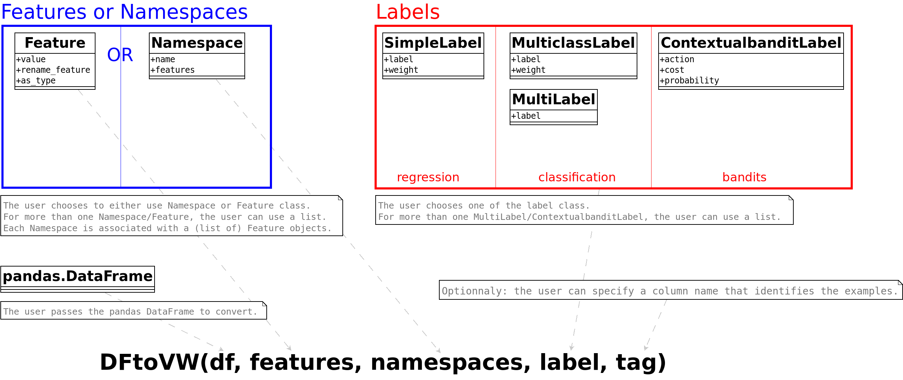

Pandas DataFrame to VowpalWabbit Format Conversion#
Credit
Thank you @etiennekintzler for contributing this tutorial.
The purpose of this tutorial is to show how to use the vowpalwabbit.DFtoVW.DFtoVW class to convert a pandas’s DataFrame into a list of Vowpal Wabbit examples and to explore the outputs (model weights, VW output log) of the trained model. The VW output log is parsed using the class VWLogParser defined in this notebook.
The task is to predict the concentration of particulate matter (more specifically PM 2.5) in the atmosphere of 5 chinese cities. The original dataset contains 19 columns (targets, datetime and atmospheric features) and 167 358 observations.
For more details on the data, see the following UCI repository: https://archive.ics.uci.edu/ml/datasets/PM2.5+Data+of+Five+Chinese+Cities
For the associated academic papers, see Liang, Xuan, et al. “PM2. 5 data reliability, consistency, and air quality assessment in five Chinese cities.” and Liang, Xuan, et al. “Assessing Beijing’s PM2. 5 pollution: severity, weather impact, APEC and winter heating.”
The data can be downloaded from the following URL: https://archive.ics.uci.edu/ml/machine-learning-databases/00394/FiveCitiePMData.rar. A function download_data is available in this notebook to download and extract the data (but this step can also be done manually). The folder containing the data is defined using the constant variable DATA_FOLDER (it is set to'PM_DATA' by default).
Tutorial outline#
1. Data
2. Train a first model
3. Visualizing model’s outputs
4. Train a more complex model
Requirements#
The notebook was developed for VW 8.11.0.
It should work with older versions (>= 8.10) except for one cell in section 4.3 where the attribute name of Feature is accessed.
Importing packages#
import os
from os.path import join
import re
import pandas as pd
import matplotlib.pyplot as plt
import numpy as np
import seaborn as sns
from vowpalwabbit.dftovw import DFtoVW
from vowpalwabbit import Workspace
Function and class definition#
# VW output parsing function/class
class VWLogParser:
"""Parser for Vowpal Wabbit output log"""
def __init__(self, file_path_or_list):
"""The file name or list of lines to parse"""
if isinstance(file_path_or_list, (list, str)):
self.file_path_or_list = file_path_or_list
else:
raise TypeError(
"Argument `fname` should be a str (for file path) or a list of log lines"
)
def parse(self):
"""Parse the output from `vw` command, return dataframe/dictionnaries with the associated data."""
# Init containers
self.table_lst = []
self.params = {}
self.metrics = {}
self.inside_table = False
self.after_table = False
if isinstance(self.file_path_or_list, list):
for row in self.file_path_or_list:
self._parse_vw_row(row)
else:
with open(self.file_path_or_list, "r") as f:
for row in f:
self._parse_vw_row(row)
self.df = self._make_output_df(self.table_lst)
return self.params, self.df, self.metrics
def _cast_string(self, s):
"""Cast to float or int if possible"""
try:
out = float(s)
except ValueError:
out = s
else:
if out.is_integer():
out = int(out)
return out
def _make_output_df(self, lst):
"""Make dataframe from the list"""
# Make columns from first and second elements of the list
columns = [
f"{first_row}_{second_row}" for (first_row, second_row) in zip(*lst[:2])
]
df = pd.DataFrame(data=lst[2:], columns=columns)
# Cast cols to appropriate types
int_cols = ["example_counter", "current_features"]
for col in int_cols:
df[col] = df[col].astype(int)
float_cols = df.columns.drop(int_cols)
for col in float_cols:
df[col] = df[col].astype(float)
return df
def _parse_vw_row(self, row):
"""Parse row and add parsed elements to instance attributes params, metrics and table_lst"""
if "=" in row:
param_name, value = [
element.strip() for element in row.split("=", maxsplit=1)
]
if self.after_table:
self.metrics[param_name] = self._cast_string(value)
else:
self.params[param_name] = self._cast_string(value)
elif ":" in row:
param_name, value = [
element.strip() for element in row.split(":", maxsplit=1)
]
self.params[param_name] = self._cast_string(value)
elif not self.after_table:
if re.match("average\s+since", row):
self.inside_table = True
if row == "\n":
self.inside_table = False
self.after_table = True
if self.inside_table:
self.table_lst += [row.split()]
# Data import/download functions
def download_data(dest_dir="PM_DATA"):
import requests
from io import BytesIO
from rarfile import RarFile
URL_PM_CITIES = "https://archive.ics.uci.edu/ml/machine-learning-databases/00394/FiveCitiePMData.rar"
print(f"Downloading data at {URL_PM_CITIES}")
r = requests.get(URL_PM_CITIES)
bcontent = BytesIO(r.content)
rf = RarFile(bcontent)
print(f"Extracting content in folder {repr(dest_dir)}")
rf.extractall(dest_dir)
def import_data(folder_path, verbose=True):
df_lst = []
for fname in os.listdir(folder_path):
fpath = join(folder_path, fname)
if verbose:
print(f"Importing file: {fpath}")
city_name = re.sub(
"pm$", repl="", string=re.search("^[a-z]+", string=fname.lower()).group()
)
df_city = pd.read_csv(fpath)
df_city_clean = (
df_city.assign(city=city_name)
.drop(
columns=["No"]
+ [
col
for col in df_city.columns
if ("PM" in col) and (col != "PM_US Post")
]
)
.rename(columns={"PM_US Post": "PM"})
.dropna(subset=["PM"])
)
df_lst += [df_city_clean]
df_city = (
pd.concat(df_lst) # append dataframes
.sample(frac=1, random_state=123) # shuffle
.reset_index(drop=True)
)
return df_city
# Model weight inspection functions
def get_feature_names(df):
cat_names = get_cat_feature_names(df)
num_names = df.select_dtypes(np.number).columns.tolist()
return cat_names + num_names
def get_cat_feature_names(df):
unique_values_cat = df.select_dtypes(object).apply(lambda s: s.dropna().unique())
cat_names = [
f"{key}={value}"
for (key, unique_values) in unique_values_cat.items()
for value in unique_values
]
return cat_names
def get_weight_from_name(model, feature_name, namespace_name=" "):
space_hash = model.hash_space(namespace_name)
feat_hash = model.hash_feature(feature_name, space_hash)
return model.get_weight(feat_hash)
Constants#
# Data
DATA_FOLDER = "PM_DATA"
# Graphical
SUPTITLE_FONTSIZE = 20
SUPTITLE_FONTWEIGHT = "bold"
TITLE_FONTSIZE = 15
1. Data#
1.1. Import#
if not (os.path.isdir(DATA_FOLDER) and len(os.listdir(DATA_FOLDER)) == 5):
download_data(DATA_FOLDER)
df = import_data(DATA_FOLDER)
df.head()
The full label of some features (the non obvious ones):
PM: PM2.5 concentration (ug/m^3)
DEWP: Dew Point (Celsius Degree)
TEMP: Temperature (Celsius Degree)
HUMI: Humidity (%)
PRES: Pressure (hPa)
cbwd: Combined wind direction
Iws: Cumulated wind speed (m/s)
precipitation: hourly precipitation (mm)
Iprec: Cumulated precipitation (mm)
1.2. Types#
The types of the columns:
df.dtypes
Some columns (year, month, day, hour, season) have been imported as integer/float but should be treated as categorical by the model. Hence, we convert these columns to categorical (str) type.
to_cat_cols = ["year", "month", "day", "hour", "season"]
for col in to_cat_cols:
df[col] = df[col].astype(str)
# Pandas converts np.nan to "nan" when casting to float to object/str :(
df[df == "nan"] = np.nan
Also, we standardize the numerical variables so we can compare their relative importance.
for col in df.select_dtypes(np.number).columns.difference(["PM", "log_PM"]):
df[col] = (df[col] - df[col].mean()) / df[col].std()
2. Train a first model#
2.1. Converting DataFrame to Vowpal Wabbit input format.#
We now use DFtoVW class to convert this DataFrame to VW input format.
There are 2 ways to use the class DFtoVW:
Basic usage, using the
DFtoVW.from_column_namesclass method.Advanced usage, that relies on the VW input format specification (see Input format section of wiki). It is build upon classes such as
Feature,NamespaceorSimpleLabel,MulticlassLabeletc.
The current section illustrates the basic usage. Section 4 will present the advanced usage.
y = "PM"
x = [
"year",
"month",
"day",
"hour",
"season",
"DEWP",
"HUMI",
"PRES",
"TEMP",
"cbwd",
"Iws",
"precipitation",
"city",
]
print("label:", y)
print("features:", x)
converter = DFtoVW.from_column_names(df=df, y=y, x=x)
examples = converter.convert_df()
We can inspect the first few examples:
examples[:5]
For categorical features, that VW format is feature_name=feature_value whereas for numerical features the format is feature_name:feature_value. One nice property of the class is that it will build the appropriate VW type (numerical or categorical) based on the types of the dataframe’s columns.
Also note that:
for categorical variables, VW adds
:1behind the scene. For instanceday=14is equivalent today=14:1The
=doesn’t have any special meaning and another symbol could have been used. However it’s quite standard to use=
Finally, if the feature name provided by the user is not found of the dataframe, the class will raise a ValueError:
try:
DFtoVW.from_column_names(df=df, y=y, x=["TEMP", "COLUMN_NOT_IN_DF"])
except Exception as e:
print(type(e))
print(e)
2.2. Define and train model#
We now define the VW model. Note that we enable logging and also set the progress parameter (P) to 1 to log the information for each example.
model = Workspace(P=1, enable_logging=True)
for ex in examples:
model.learn(ex)
model.finish()
3. Visualizing model’s outputs#
3.1. Retrieving model’s parameters, losses/predictions and summary metrics from the log#
Since we enable logging in the model definition (subsection 2.2), we can get the model’s log. The log is returned as a list of strings by the vw.get_log method. Below are the first 20 lines:
model.get_log()[:20]
And the last 10 lines:
model.get_log()[-10:]
The class VWLogParser can be used to parse this log. It will return the following objects:
the initial parameters (beginning of the log)
the information available for each example/iteration (middle of the log)
the summary metrics (end of the log)
The parsed information is available as dict or DataFrame objects that can be easily manipulated.
log_parser = VWLogParser(model.get_log())
params, df_iter, summary_metrics = log_parser.parse()
print("Model's parameters")
display(params)
print("\n")
print("Information at each iteration")
display(df_iter)
print("\n")
print("Summary metrics")
display(summary_metrics)
3.2. Visualizing the average loss and the distribution of selected metrics#
The following plots represent the average loss through time and the instantaneous loss:
scatter_var = ["average_loss", "since_last"]
g = sns.relplot(
data=df_iter[scatter_var + ["example_counter"]].melt(id_vars="example_counter"),
x="example_counter",
y="value",
col="variable",
col_wrap=3,
facet_kws={"sharey": False, "sharex": True},
kind="scatter",
s=4,
height=6,
aspect=1.5,
alpha=0.5,
)
g.fig.suptitle(
"Scatter plot of losses", fontsize=SUPTITLE_FONTSIZE, fontweight=SUPTITLE_FONTWEIGHT
)
g.set_titles("{col_name}", size=TITLE_FONTSIZE)
g.fig.tight_layout()
In what follows, we consider the metrics recorded after the 50 000th iteration.
start_idx = 50_000
distr_vars = ["current_label", "current_predict", "current_features", "example_weight"]
g = sns.displot(
data=df_iter.loc[start_idx:, distr_vars].melt(),
x="value",
col="variable",
multiple="dodge",
hue="variable",
bins=60,
common_bins=False,
facet_kws=dict(sharex=False, sharey=False),
col_wrap=4,
height=5,
)
g.fig.suptitle(
"Distribution of selected metrics",
fontsize=SUPTITLE_FONTSIZE,
fontweight=SUPTITLE_FONTWEIGHT,
y=1.05,
)
g.set_titles("{col_name}", size=TITLE_FONTSIZE)
plt.show()
We notice that the distribution of the predictions differs substantially from the one of the labels.
3.3. Visualizing the predictions of the model#
This section offers a visualization of the model’s predictions and compares them with the labels (the truth).
error = df_iter.current_label - df_iter.current_predict
f, (ax1, ax2) = plt.subplots(figsize=(20, 7), ncols=2)
f.suptitle(
"Predictions and errors", fontsize=SUPTITLE_FONTSIZE, fontweight=SUPTITLE_FONTWEIGHT
)
# Scatterplot pred vs truth
sns.scatterplot(
data=df_iter.loc[start_idx:],
x="current_predict",
y="current_label",
ax=ax1,
s=2,
alpha=0.15,
)
ax1.set_title("Prediction vs truth", fontsize=TITLE_FONTSIZE)
max_range = int(df_iter[["current_label", "current_predict"]].quantile(0.99).max())
ax1.set_xlim([0, max_range])
ax1.set_ylim([0, max_range])
# Adding x=y line
# range_x = range(0, int(df_iter[["current_predict", "current_label"]].max().min()))
range_x = range(0, max_range)
ax1.plot(range_x, range_x, linestyle=":", color="red", linewidth=2.5)
# Histogram of errors
sns.histplot(error[start_idx:], ax=ax2)
ax2.set_title("Distribution of errors", fontsize=TITLE_FONTSIZE)
plt.show()
The model tends to undervalue the concentration of PM. Another way to see it is that the distribution of errors (difference between the label and the prediction) has a right-skewed.
3.4. Visualizing learnt weights#
We build a dataframe with the model’s weights:
# Get VW feature names
feature_names = get_feature_names(df)
# Get weights from feature names
weights_df = pd.DataFrame(
[(name, get_weight_from_name(model, name), "=" in name) for name in feature_names],
columns=["vw_feature_name", "weight", "is_cat"],
)
# Adding columns for easier visualization
weights_df["feature_name"] = weights_df.apply(
lambda row: row.vw_feature_name.split("=")[0]
if row.is_cat
else row.vw_feature_name,
axis=1,
)
weights_df["feature_value"] = weights_df.apply(
lambda row: row.vw_feature_name.split("=")[1].zfill(2)
if row.is_cat
else row.vw_feature_name,
axis=1,
)
weights_df.sort_values(["feature_name", "feature_value"], inplace=True)
g = sns.catplot(
data=weights_df[lambda df: df.is_cat],
kind="bar",
x="feature_value",
y="weight",
col="feature_name",
hue="feature_name",
col_wrap=3,
sharex=False,
sharey=False,
aspect=1.5,
dodge=False,
)
g.fig.suptitle(
"Feature weights (categorical features)",
fontsize=SUPTITLE_FONTSIZE,
fontweight=SUPTITLE_FONTWEIGHT,
)
g.set_titles("{col_name}", size=TITLE_FONTSIZE)
# Add horizontal bar at y=0
for ax in g.axes.flat:
ax.axhline(0, color="gray", linestyle=":")
g.fig.tight_layout()
Based on the weights learnt by the model, the predicted value for PM will be higher:
for wind orientation “calm and variable” (CV)
for cities such as Beijing or Chengdu
for winter season/months
for evening hours
for certain day of month such as 21-23 (oddly)
The predicted value will be lower:
for winds from the north
for year 2015
for hours around noon
for certain cities such as Guangzhou and Shanghai.
f, ax = plt.subplots(figsize=(12, 5))
ax = sns.barplot(
data=weights_df[lambda df: df.is_cat == False], x="feature_name", y="weight"
)
ax.set_title("Feature weights (numerical features)", fontsize=TITLE_FONTSIZE)
# Set xlabels in bold, remove x-axis title
ax.set_xticklabels(ax.get_xticklabels(), fontweight=SUPTITLE_FONTWEIGHT)
ax.set(xlabel=None)
# Add horizontal line
ax.axhline(0, linestyle=":", color="gray")
plt.show()
Higher cumulated wind speed (Iws) and higher temperature (TEMP) are associated with lower predicted values.
Higher air pressure (PRES) is associated with higher predicted values.
4. Train a more complex model: using log transformed target and namespace interactions#
This section illustrates the advanced usage of DFtoVW class. To do so, we will need to import some specific classes from the DFtoVW module.
from vowpalwabbit.DFtoVW import SimpleLabel, Namespace, Feature
The following drawing explains how to use these classes:

4.1. Applying logarithm transformation to the target#
The distribution of the target is close to a log-normal distribution:
f, (ax1, ax2) = plt.subplots(figsize=(12, 5), ncols=2)
f.suptitle(
"Distribution of the target (PM)",
fontsize=SUPTITLE_FONTSIZE,
fontweight=SUPTITLE_FONTWEIGHT,
)
df["PM"].hist(bins=40, ax=ax1)
ax1.set_title("No transformation", fontsize=TITLE_FONTSIZE)
np.log(df["PM"]).hist(bins=40, ax=ax2)
ax2.set_title("Log-transformed", fontsize=TITLE_FONTSIZE)
plt.show()
We decide to train the model on the log transformed version of the target (called log_PM).
For a regression task, we use the SimpleLabel class (more details on this type in the Input Format section of the wiki) to represent the target.
df["log_PM"] = df["PM"].apply(np.log)
label = SimpleLabel("log_PM")
4.2. Defining namespaces#
Namespaces are defined using the Namespace class. They are formed of a (list of) Feature and can have a name.
# Datetime namespace
datetime_features = ["year", "month", "day", "hour", "season"]
ns_datetime = Namespace(
features=[Feature(col) for col in datetime_features], name="datetime_ns"
)
# City namespace
ns_city = Namespace(features=Feature("city"), name="city_ns")
# Weather namespace
weather_features = ["DEWP", "HUMI", "PRES", "TEMP", "cbwd", "Iws", "precipitation"]
ns_weather = Namespace(
features=[Feature(col) for col in weather_features], name="weather_ns"
)
4.3. Converting to VW format and training model#
converter_advanced = DFtoVW(
df=df, namespaces=[ns_datetime, ns_weather, ns_city], label=label
)
Namespace and Feature objects can be accessed using DFtoVW’s instance attributes namespaces and features:
for namespace in converter_advanced.namespaces:
print("namespace:", namespace.name)
for feature in namespace.features:
print("\tfeature:", feature.name)
We can inspect the first few examples:
examples_advanced = converter_advanced.convert_df()
examples_advanced[:5]
In this new model we will add interactions between the “weather” namespace and all the namespaces.
model_advanced = Workspace(
arg_str="--redefine W:=weather_ns --interactions W:", P=1, enable_logging=True
)
for ex in examples_advanced:
model_advanced.learn(ex)
model_advanced.finish()
4.4. Visualizing model’s outputs#
We transform the labels and predictions using exponential function (since the target is log-transformed) so they can be compared with the ones of section 3.
params_advanced, df_iter_advanced, metrics_advanced = VWLogParser(
model_advanced.get_log()
).parse()
df_iter_advanced.current_label = np.exp(df_iter_advanced.current_label)
df_iter_advanced.current_predict = np.exp(df_iter_advanced.current_predict)
error_advanced = df_iter_advanced.current_label - df_iter_advanced.current_predict
f, ((ax1, ax2), (ax3, ax4)) = plt.subplots(figsize=(20, 12), ncols=2, nrows=2)
f.suptitle(
"Predictions, labels and errors",
fontsize=SUPTITLE_FONTSIZE,
fontweight=SUPTITLE_FONTWEIGHT,
)
sns.histplot(df_iter_advanced.current_label.iloc[start_idx:], ax=ax1, color="blue")
ax1.set_title("Distribution of current_label", fontsize=TITLE_FONTSIZE)
sns.histplot(df_iter_advanced.current_predict.iloc[start_idx:], ax=ax2, color="orange")
ax2.set_title("Distribution of current_predict", fontsize=TITLE_FONTSIZE)
sns.scatterplot(
data=df_iter_advanced.iloc[start_idx:],
x="current_predict",
y="current_label",
ax=ax3,
s=2,
alpha=0.15,
)
ax3.set_title("Prediction vs truth", fontsize=TITLE_FONTSIZE)
# Add x=y line
max_range = int(df_iter[["current_label", "current_predict"]].quantile(0.99).max())
ax3.set_xlim(0, max_range)
ax3.set_ylim(0, max_range)
range_x = range(0, max_range)
ax3.plot(range_x, range_x, linestyle=":", color="red", linewidth=2.5)
sns.histplot(error_advanced, ax=ax4)
ax4.set_title("Distribution of errors", fontsize=TITLE_FONTSIZE)
plt.show()
In this new model, the distribution of the predictions is more in line with the distribution of the labels.
The errors of this model are also closer to a normal distribution, even though the model still undervalues some observations.
4.5. Comparing models’ performance#
The model in section 2 is called “simple” and the current model (with interactions and log-transformed target) is called “advanced”.
loss_type = 1 # 1 for L1-loss, 2 for L2-loss
n_iter = 10_000 # Number of iterations on which to compute the loss (for moving average and final value)
df_loss = pd.concat([error, error_advanced], axis=1, keys=["simple", "advanced"]).apply(
lambda x: np.power(np.abs(x), loss_type)
)
f, (ax1, ax2) = plt.subplots(ncols=2, figsize=(15, 5.5))
f.suptitle(
"Comparison of models' performance",
fontweight=SUPTITLE_FONTWEIGHT,
fontsize=SUPTITLE_FONTSIZE,
)
df_loss.rolling(n_iter).mean().plot(ax=ax1)
ax1.set_title(f"Moving average of loss (over {n_iter:,} iterations)", fontsize=15)
loss_last_it = df_loss.tail(n_iter).mean()
pct_diff_loss = 100 * (loss_last_it.advanced / loss_last_it.simple - 1)
loss_last_it.plot.bar(ax=ax2, color="gray")
ax2.set_title(f"Loss computed on the last {n_iter:,} iterations", fontsize=15)
ax2.text(
0.75,
loss_last_it.advanced * 1.025,
f"Δ% loss= {pct_diff_loss:.2f}",
fontsize=12,
fontweight=SUPTITLE_FONTWEIGHT,
)
ax2.set_xticklabels(ax2.get_xticklabels(), fontsize=13, rotation=0)
plt.show()
The model with interactions and log-transformed target offers substantial improvements over the simple model: the loss (computed on the last 10 000 observations) decreases by about 23%.